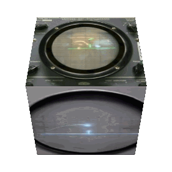
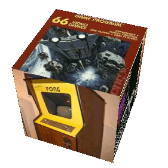
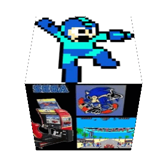
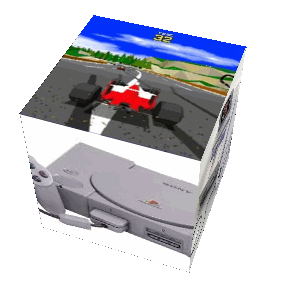
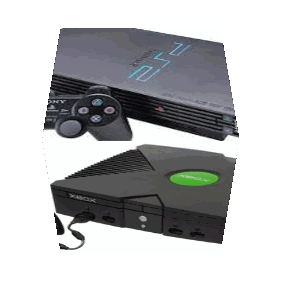

| Willy Higinbotham | ||||||||||||
|---|---|---|---|---|---|---|---|---|---|---|---|---|
| El videojuego fue concebido en 1958, por un físico llamado Willy Higinbotham.cuándo se inventaron los videojuegos Se estaba preparando para el día de puertas abiertas anual del Laboratorio Nacional de Brookhaven en Upton, Long Island. Quería hacer que la ocasión fuera más entretenida que un montón de exposiciones estáticas. Lo conectó a un televisor en blanco y negro e hizo aparecer una pelota botando de un lado a otro sobre una “red” como si fuera un juego del tenis. | ||||||||||||
|  |
| 1970-1979: La eclosión de los videojuegos | |||||||||
|---|---|---|---|---|---|---|---|---|---|
| Un hito importante en el inicio de los videojuegos tuvo lugar en 1971 cuando Nolan Bushnell comenzó a comercializar Computer Space, una versión de Space War, aunque otra versión recreativa de Space War como fue Galaxy War puede que se le adelantara a principios de los 70 en el campus de la universidad de Standford. | |||||||||
|  |
| 1980-1989: La década de los 8 bits | ||||||
|---|---|---|---|---|---|---|
| Los años 80 comenzaron con un fuerte crecimiento en el sector del videojuego alentado por la popularidad de los salones de máquinas recreativas y de las primeras videoconsolas aparecidas durante la década de los 70. | ||||||
|  |
| 1990-1999: La revolución de las 3D | |||
|---|---|---|---|
| A principios de los años 90 las videoconsolas dieron un importante salto técnico gracias a la competición de la llamada "generación de 16 bits" compuesta por la Mega Drive, la Super Nintendo Entertainmet de Nintendo, la PC Engine de NEC, conocida como Turbografx en occidente y la CPS Changer de (Capcom). | |||
|  |
| Desde el 2000: El comienzo del nuevo siglo |
|---|
| En el 2000 Sony lanzó la anticipada PlayStation 2 y Sega lanzó otra consola con las mismas características técnicas de la Dreamcast, nada más que venia con un monitor de 14 pulgadas, un teclado, altavoces y los mismos mandos llamados Dreamcast Drivers 2000 Series CX-1. |
|  |